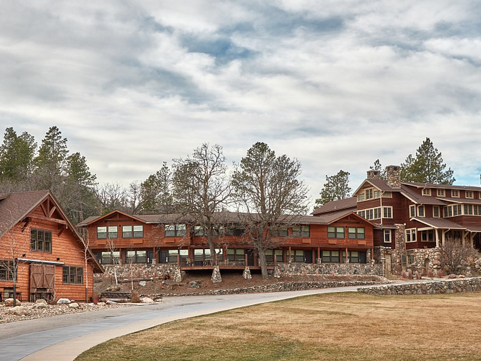

Custer State Park · Historic
State Game Lodge & Sylvan Lake Lodge
Historic lodges inside the park.
Official details for State Game Lodge & Sylvan Lake LodgeBison, granite spires and Mount Rushmore.
The Black Hills rise out of the prairie in a cool, pine-covered island of granite. Stay in Custer State Park, where bison wander past the lodge, drive the Needles Highway through tunnels and spires, see Mount Rushmore at the evening lighting, visit Crazy Horse Memorial and descend into Wind Cave.

Time illustration: direct distance at 150 KTAS plus 15 minutes for departure and arrival, matching the discovery page. Use ForeFlight for your actual flight plan.
Check the weekend weather at both ends → Flight category, your minimums and the crosswind on the best runway.
More in Aviation & getting around below. Crew cars change often: call the FBO before you go. How to have a rental car waiting at the FBO · Know something we missed? Tell us.
KRAP, Rapid City Regional, is a towered airport about 45 minutes from Custer State Park and Mount Rushmore.
Rapid City Regional Airport, Rapid City, SD
A second FBO, Diamond Aviation, is opening at KRAP. Confirm FBO hours, fees and rental cars. No live fuel price is shown.
High plains weather: strong winds, summer thunderstorms and fast-moving winter systems. Check density altitude in summer. About 1280 nm from Myrtle Beach: a long cross-country day with two fuel stops. Plan four or more nights, or break the trip with an overnight on the way.
Rates and availability need travel dates. Summer books early; the Sturgis Rally in August fills the region.
Historic lodges inside the park.
Official details for State Game Lodge & Sylvan Lake LodgeA historic downtown hotel with a rooftop bar.
Official details for Hotel Alex JohnsonLog cabins in the park, with trail rides nearby.
Official details for Blue Bell LodgePrices and availability for your dates, through our partner Stay22. This is an affiliate link: we may earn a commission at no cost to you. The picks above are never paid.
Reserve weekend dinners.
A Rapid City steakhouse.
Official details for Delmonico GrillA downtown Rapid City favorite.
Official details for Tally’s Silver SpoonBison and trout at the lodges.
Official details for Custer State Park lodgesBig days on the road.
This prototype links to the local visitor site. It does not yet match events to your travel dates.
Custer State Park’s annual bison roundup.
Park for Buffalo RoundupVery busy; book far ahead or avoid.
Lodges and roads are open.
Check the local calendar when choosing a weekend, and confirm dates and tickets with the organizer.
A sample long weekend: monuments, bison and the Needles. This is a long flight; plan four or more nights. No bookings or availability confirmed.
A day trip isn't practical from the Southeast; this is a long-flight destination.
Drive to Custer State Park.
The Wildlife Loop.
Land at KRAP, subject to weather, your fuel stops and your actual flight plan.
Drive to Custer State Park.
Dinner at the lodge, then the Mount Rushmore lighting.
The Wildlife Loop.
The Needles Highway and Sylvan Lake.
Dinner at Delmonico Grill.
Crazy Horse Memorial.
Allow time at the airport.
A long trip east; start early and plan your fuel stops.
The Wildlife Loop.
The Needles Highway and Sylvan Lake.
Dinner at Delmonico Grill.
These details make the difference between an appealing list and a usable getaway.
Lodging first; park lodges fill early.
About 1,280 nm. Plan two fuel stops and four or more nights.
Bison are dangerous; stay in your car.
June to September.
Picks and links reviewed by WingAway Weekends. Hours, prices, menus and availability change often, so confirm directly with each place before booking. Spotted something out of date, or have a favorite we missed? Email us at hello@wingawayweekends.com.
WingAway Weekends helps you discover the destination. Use ForeFlight and current official aviation information for route, performance, weather, NOTAMs and preflight decisions. Flight planning and PIC responsibility stay with the pilot.
One fly-in weekend, a Fly to Lunch pick and the newest guides, about once a month.
Free. Unsubscribe anytime.